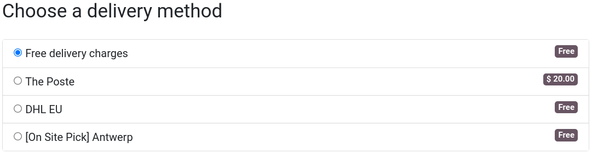

Métodos de envío¶
Según su estrategia de envío, puede elegir entre métodos de envío propios, o puede usar une integración con un proveedor de envíos existente.
Ver también
Métodos de envío propios¶
Puede crear sus propios métodos de envío personalizados y definir reglas para calcular los costos de envío. Para hacerlo, vaya a , donde puede seleccionar un método de envío existente, o crear uno. Si decide crear un método de envío, podrá elegir entre un precio fijo, con base en reglas, o recoger en tienda.
Recoger en tienda¶
Primero debe activar la opción Recoger en tienda en los ajustes (, solo tiene que hacer clic en Pagos y recolección en tienda física. Una vez que lo haya activado, puede seleccionar y personalizar sitios de recolección. Los sitios de recolección pueden ser específicos para el sitio web, pero de manera predeterminada están disponibles en todos los sitios web.
Proveedores de envío¶
Otra solución es utilizar alguna de las integraciones con un proveedor de envío existente. La ventaja de utilizar una integración es que los costos de envío se calculan de forma automática según cada orden y también se generan sus etiquetas.
Disponibilidad para sitio web¶
Los métodos de envío se pueden habilitar solo en sitios web específicos si así lo quiere. Para hacerlo, debe ir a , y seleccione el método de envío deseado. En el campo Sitio web seleccione el sitio web al cual quiere que se limite este método de envío. Si lo deja vacío el método de envío estará disponible en todos los sitios web.
Método de entrega al finalizar la compra¶
Los clientes puede elegir el método de envío al final del proceso de pago, al llegar al paso Confirmar orden.
